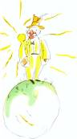

La seconde planète était habitée par un vaniteux :
– Ah ! Ah ! Voilà la visite d’un admirateur ! s’écria de loin le vaniteux dès qu’il aperçut le petit prince.

Car, pour les vaniteux, les autres hommes sont des admirateurs.
– Bonjour, dit le petit prince. Vous avez un drôle de chapeau.
– C’est pour saluer, lui répondit le vaniteux. C’est pour saluer quand on m’acclame. Malheureusement il ne passe jamais personne par ici.
– Ah oui ? dit le petit prince qui ne comprit pas.
– Frappe tes mains l’une contre l’autre, conseilla donc le vaniteux.
Le petit prince frappa ses mains l’une contre l’autre. Le vaniteux salua modestement en soulevant son chapeau.
« Ça c’est plus amusant que la visite au roi », se dit en lui-même le petit prince. Et il recommença de frapper ses mains l’une contre l’autre. Le vaniteux recommença de saluer en soulevant son chapeau.
Après cinq minutes d’exercice le petit prince se fatigua de la monotonie du jeu :
– Et, pour que le chapeau tombe, demanda-t-il, que faut-il faire ?
Mais le vaniteux ne l’entendit pas. Les vaniteux n’entendent jamais que les louanges.
– Est-ce que tu m’admires vraiment beaucoup ? demanda-t-il au petit prince.
– Qu’est-ce que signifie admirer ?
– Admirer signifie reconnaître que je suis l’homme le plus beau, le mieux habillé, le plus riche et le plus intelligent de la planète.
– Mais tu es seul sur ta planète !
– Fais-moi ce plaisir. Admire-moi quand même !
– Je t’admire, dit le petit prince, en haussant un peu les épaules, mais en quoi cela peut-il bien t’intéresser ?
Et le petit prince s’en fut.
« Les grandes personnes sont décidément bien bizarres », se dit-il simplement en lui-même durant son voyage.